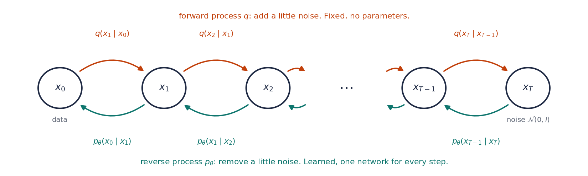

From one hidden variable to a chain¶
Sessions. This page continues From Jensen's inequality to the ELBO. It asks what goes wrong with a single hidden variable, replaces it with a chain of them, introduces the one assumption that keeps the chain manageable, puts the ELBO for one hidden variable next to the ELBO for the chain, and follows the result all the way to the loss that DDPM is trained with.
0. Where we are¶
The previous page ended with three formulas. The goal is maximum likelihood: make \(\E_{\text{data}}[\log p_\theta(x)]\) large. With a hidden variable \(z\) and any proxy \(q(z)\) for its posterior, the likelihood splits into a part we can compute and a gap:
Writing \(p_\theta(x, z) = p(z)\, p_\theta(x \mid z)\), the ELBO has two terms, and the training loss is its negative, averaged over the data:
The rest of this page reuses these formulas, with \(z\) replaced by a chain of hidden variables.
1. Why one big jump is a problem¶
With one hidden variable, generating a sample is a single jump: draw \(z\) from \(\N(0, I)\), pass it through the decoder once, and read off \(x\). To see what goes wrong, we first need to be clear about what the decoder outputs, and why.
1.1 Why the decoder outputs a distribution, and why a Gaussian¶
A neural network outputs numbers. A decoder that simply returned one point \(x = g_\theta(z)\) for each \(z\) would not be enough, for a reason we have already met. The ELBO contains the reconstruction term \(\E_q[\log p_\theta(x \mid z)]\), so we need a number for how likely a data point \(x\) is given \(z\). If the decoder could only produce the single point \(g_\theta(z)\), every other \(x\) would have probability zero, its log would be \(-\infty\), and there would be nothing to train.
So the decoder has to describe a whole distribution over \(x\) for each \(z\). Since a network can only output numbers, the usual approach is to fix a family of distributions that is described by a few numbers, and let the network output those numbers. The family has to allow two things:
- evaluating \(\log p_\theta(x \mid z)\) for a given \(x\), which training needs, and
- sampling from it, which generation needs.
The Gaussian is the simplest family that does both. The network outputs only the centre \(\mu_\theta(z)\), the spread \(\sigma\) is fixed, and
The log-density is a squared error, which is easy to compute and to differentiate, and a sample costs one line. That is why the decoder's output is a Gaussian. It is a choice made for convenience, and the rest of this section is about what that choice costs.
Could we use a more flexible family instead?
Yes. A mixture of several Gaussians, or a model that generates the coordinates of \(x\) one at a time, can describe far more shapes. Both are used in practice, but they are harder to train and slower to sample from, especially for images with millions of coordinates. Diffusion models take a different route: they keep a simple Gaussian for each step and change the problem so that a Gaussian is good enough. The rest of this section explains how.
1.2 What should the decoder output?¶
A Gaussian is one fixed shape with one centre. Whether that is good enough depends on what the decoder should ideally output.
To make this concrete, think of the hidden variable as a noisy version of the data, which is exactly what it will be in DDPM:
Generating means going back from \(y\) to \(x\). The ideal decoder would output the true distribution of \(x\) given \(y\). By Bayes' rule (note 2),
As a function of \(x\), the second factor is a bump of width \(\sigma\) centred at \(y\). So the ideal answer is the data distribution multiplied by a bump around the noisy point. The question is whether this product looks like a Gaussian.
1.3 A worked example with two values¶
Let the data take only two values, \(-1\) and \(+1\), each with probability \(\tfrac12\). Then \(p(x \mid y)\) puts all its probability on these two values, and Bayes' rule gives
A lot of noise. Take \(\sigma = 1\) and observe \(y = 0.3\). Then \(P(x = +1 \mid y) = 1/(1 + e^{-0.6}) = 0.65\) and \(P(x = -1 \mid y) = 0.35\). Both values are still quite possible: the answer is two separate possibilities. The best a single Gaussian can do is to match the mean and the variance of this answer:
So the Gaussian is centred at \(0.29\), where the data never is, and it is wide enough to cover both values. Its samples land anywhere between \(-2\) and \(2\), mostly in places that are not data.
A little noise. Now take \(\sigma = 0.2\) and observe \(y = 0.9\), a point that is a little noise away from \(+1\). Then \(P(x = +1 \mid y) = 1/(1 + e^{-45})\), which is \(1\) to many decimal places. Only one value is possible, and a narrow Gaussian centred near \(+1\) describes the answer well.
So the same Gaussian decoder is a poor answer after a lot of noise and a good one after a little.
1.4 Why a little noise always gives a nearly Gaussian answer¶
The example had only two values, but the same thing happens for any smooth data distribution. When \(\sigma\) is small, the bump \(\N(y;\, x,\, \sigma^2)\) is narrow. Over that narrow range of \(x\), a smooth curve \(p(x)\) hardly changes, so multiplying the bump by \(p(x)\) changes its shape very little. The product is still nearly the bump, which is a Gaussian. When \(\sigma\) is large, the bump is wide, it covers the whole data distribution, and the product inherits all of its structure, for example two separate peaks.
The same argument with a formula
Over a narrow range around \(y\), approximate \(\log p(x)\) by its tangent line: \(\log p(x) \approx \log p(y) + s\,(x - y)\), where \(s\) is the slope of \(\log p\) at \(y\). Then
after completing the square. This is exactly a Gaussian, with mean \(y + \sigma^2 s\) and variance \(\sigma^2\). The approximation ignores the curvature of \(\log p\) over the width of the bump, and that error shrinks as \(\sigma\) shrinks. The slope of \(\log p\), here \(s\), will come back later as the score.
1.5 What the number of steps has to do with it¶
Turning data into pure noise takes a fixed total amount of noise. If we add it all at once, the reverse step has to undo a large \(\sigma\), and section 1.3 shows what a Gaussian decoder does then. If we split the same total into \(T\) small steps, each step adds only a little noise, so each reverse step has a narrow bump and, by section 1.4, a nearly Gaussian answer.
So the number of steps controls the width of the bump in each step, and that width decides whether a Gaussian is good enough. As a reference point, the original DDPM uses \(T = 1000\) steps, and each step adds noise with a standard deviation between about \(0.01\) and \(0.14\), on data whose values range over an interval of length \(2\).
The same picture on the spiral, first for one big jump and then for one small step:
Does this apply to a VAE too, where z is not a noisy copy of x?
Yes, in a different form. If \(z\) does not pin down \(x\), the true \(p(x \mid z)\) is spread out or has several peaks, and a Gaussian decoder places its centre at their average. This is why samples from a plain VAE tend to be blurry. A VAE tries to fix this by learning an encoder that makes \(z\) informative about \(x\). DDPM instead keeps the hidden variables as plain noisy copies of the data and makes each step small.
This is the reason for replacing the one big jump with many small ones.
2. A chain of hidden variables¶
Replace the single \(z\) by a sequence of hidden variables. We name them so that the data is at one end and the noise at the other:
\(x_T\) is pure noise, \(x_0\) is the data, and generating walks from left to right, one small step at a time. We write \(x_{1:T}\) for all the hidden variables \((x_1, \ldots, x_T)\), and \(x_{0:T}\) for everything.
How do we write down the joint distribution? The chain rule of note 2 works for any number of variables: produce them one at a time, each given everything produced so far.
This is always true, and it is a problem. Each step may depend on all the steps before it. The last factor takes \(T\) inputs, and with \(T = 1000\) that is a thousand images. A model of this form is huge, and the ELBO for it has no structure to exploit. The same goes for the proxy \(q(x_{1:T} \mid x_0)\).
3. The Markov assumption¶
3.1 What it says¶
In words, the assumption is that the next state depends only on the current state, not on the path that led to it.
For example, in a board game, where your piece goes next depends on the square it is on now and on the die. It does not depend on which squares it visited earlier. Knowing the whole history tells you nothing more than knowing the current square.
An example in the chain. Take a slightly noisy image and add a little more noise. The result depends on the image you have now. How that image was made, from which clean picture and through which earlier noise, does not matter any more.
Definition (Markov chain)
A sequence of random variables is a Markov chain if each one, given the one just before it, does not depend on any earlier ones:
Put this into the chain rule of section 2 and every factor loses all its inputs but one:
So the model is fully described by one starting distribution and \(T\) one-step transitions.
Is the Markov assumption a claim about the data?
No. It is a choice about how the model and the proxy are built. For the noising chain of the next section it is exactly true by construction: each step adds fresh noise to the current state only. For the generating chain it is a design decision, the same kind as choosing a Gaussian decoder, and the training objective tells us how well it works.
3.2 The two chains of DDPM¶
DDPM uses two Markov chains, one in each direction.
The proxy: a fixed noising chain. In the previous page, the proxy \(q\) was ours to choose and learn. DDPM fixes it in advance to the simplest chain that destroys information gradually: shrink a little, add a little Gaussian noise, repeat. With numbers \(\beta_1, \ldots, \beta_T\) between \(0\) and \(1\), the noise schedule, one step is
Why is the proxy now written with \(x_0\) after the bar? In the previous page the proxy was written \(q(z)\), but it was always the proxy for one particular data point: it stood in for the posterior \(p_\theta(z \mid x)\) of that \(x\), and a different data point would need a different \(q\). We left the dependence out of the notation to keep it short. Here the dependence is impossible to leave out, because the noising chain starts from the data point: \(x_1\) is a noisy copy of \(x_0\), \(x_2\) a noisy copy of \(x_1\), and so on. So we write it with the data point after the bar, \(q(x_{1:T} \mid x_0)\). It plays the same role as before: a proxy for the model's posterior \(p_\theta(x_{1:T} \mid x_0)\).
Why is it a product? The chain rule of note 2 writes the joint of \(x_1, \ldots, x_T\) given \(x_0\) one variable at a time, each given everything before it. With \(T = 3\):
The noising chain is Markov, so each step depends only on the state just before it, and the extra conditions can be dropped: \(q(x_2 \mid x_1, x_0) = q(x_2 \mid x_1)\) and \(q(x_3 \mid x_2, x_1, x_0) = q(x_3 \mid x_2)\). For general \(T\),
It has no weights: the numbers \(\beta_t\) are chosen before training, and nothing in \(q\) is learned.
Why shrink by \(\sqrt{1 - \beta_t}\) rather than just add noise? Suppose \(x_{t-1}\) has variance \(1\). Scaling it by \(\sqrt{1 - \beta_t}\) multiplies its variance by \(1 - \beta_t\), and the fresh noise, being independent, adds its own variance \(\beta_t\) on top, so \(x_t\) has variance \((1 - \beta_t) + \beta_t = 1\) again. The cloud therefore keeps its overall size at every step, while its shape is slowly replaced by noise. If we only added noise, the variance would grow by \(\beta_t\) at every step and the cloud would spread out without limit. With the shrinking, after enough steps the chain arrives at \(\N(0, I)\) whatever the data was, which is exactly the distribution we will start from when generating. (Data is usually scaled to have values of about this size before training, which is what makes "variance 1" the natural reference.)
So is the forward process just a way of preparing training data?
In practice, yes, and it is a good way to think about it. The forward process has nothing to learn; its only job during training is to turn each clean example \(x_0\) into noisy versions \(x_t\) at different steps, and the network is then trained on those pairs to undo one step of noise. What makes this more than data augmentation is that the forward process is also half of the model's definition: it is the proxy \(q\) in the bound, so the loss we derive below depends on its exact form. And it turns out that we never even have to run it one step at a time: a noisy version at any step \(t\) can be produced from \(x_0\) in a single jump, which is the first result of section 5.
The model: a learned denoising chain. It runs the other way, from noise to data, with one Gaussian step at a time:
One network \(\mu_\theta\) serves every step; it is told which step it is on. A Gaussian is a reasonable choice for each step because, as section 1 showed, each step is small.

4. The ELBO, for one hidden variable and for a chain¶
The bound of section 0 holds for any hidden variable and any proxy, so we do not need to prove anything new. We only substitute, and it helps to say exactly what goes where.
- The data point \(x\) is now called \(x_0\), because it is the start of the chain.
- The hidden variable \(z\) becomes the whole chain \(x_{1:T}\), so the joint \(p_\theta(x, z)\) becomes \(p_\theta(x_0, x_{1:T})\), written \(p_\theta(x_{0:T})\).
- The proxy \(q(z)\), which was always a proxy for one data point, becomes the noising chain started from that data point, \(q(x_{1:T} \mid x_0)\) (section 3.2).
| one hidden variable | a chain of hidden variables | |
|---|---|---|
| hidden variable | \(z\) | \(x_{1:T}\) |
| model | \(p(z)\, p_\theta(x \mid z)\) | \(p(x_T) \prod_t p_\theta(x_{t-1} \mid x_t)\) |
| proxy, for one data point | \(q(z)\), learned | \(q(x_{1:T} \mid x_0) = \prod_t q(x_t \mid x_{t-1})\), fixed |
| what the proxy stands in for | \(p_\theta(z \mid x)\) | \(p_\theta(x_{1:T} \mid x_0)\) |
| the bound | \(\log p_\theta(x) \ge \E_q\!\left[\log \dfrac{p_\theta(x, z)}{q(z)}\right]\) | \(\log p_\theta(x_0) \ge \E_q\!\left[\log \dfrac{p_\theta(x_{0:T})}{q(x_{1:T} \mid x_0)}\right]\) |
4.1 Write out the two chains¶
The bound contains the ratio of two joint distributions: the model's distribution of the whole chain, and the proxy's. Both are Markov chains, so both can be written as products. It helps to write them out for a short chain first, with \(T = 3\):
Why does \(p(x_T)\) stand apart from the other factors? The two chains do not have the same number of factors, and the reason is where each one starts.
- The model generates. It starts at \(x_T\), which has nothing before it, so its distribution is not a transition from an earlier state: it is the starting distribution, the prior \(p(x_T) = \N(0, I)\). Every other variable is produced from the one after it, which gives \(T\) transitions. In total there are \(T + 1\) factors.
- The proxy describes noising a given data point \(x_0\). The data point is not drawn by \(q\); it is the condition, written after the bar in \(q(x_{1:T} \mid x_0)\). So \(q\) has no starting factor, only the \(T\) transitions.
Each transition of one chain has a partner in the other: the model's step from \(x_t\) to \(x_{t-1}\) and the proxy's step from \(x_{t-1}\) to \(x_t\) connect the same two variables. Pairing them up uses all \(T\) factors of \(q\) and \(T\) of the \(T + 1\) factors of \(p_\theta\). The one left over is \(p(x_T)\). For general \(T\):
4.2 Take the log¶
The log of a product is the sum of the logs, so
Here and below, \(\E_q\) means that \(x_0\) is a fixed training example and \(x_1, \ldots, x_T\) are produced from it by the noising chain.
Each term is a ratio of \(p\) and \(q\). Is it a KL divergence? Not yet. In the ratio for step \(t\), the top is a distribution over \(x_{t-1}\) and the bottom is a distribution over \(x_t\). They describe different variables and point in opposite directions along the chain.
A KL needs both distributions to be about the same variable, because of how it is built: at each value \(u\) it compares how probable \(u\) is under one distribution with how probable the same \(u\) is under the other, and then averages. For two distributions over different variables there is no common value \(u\) at which to compare them, so the comparison has no meaning. The noising step on the bottom therefore has to be turned around, so that it too becomes a distribution over \(x_{t-1}\).
4.3 Set the first step aside¶
The rewrite in the next subsection uses \(q(x_{t-1} \mid x_0)\), the distribution of the earlier variable given the data point. For \(t = 1\) the earlier variable is \(x_0\) itself, and \(q(x_0 \mid x_0)\) would be the distribution of a value we already know, which is no use. So we take the \(t = 1\) term out of the sum and leave it as it is:
The \(t = 1\) term involves the data point directly, and it will become the reconstruction term.
4.4 Turn the noising step around¶
Can we just reverse \(q\)? By Bayes' rule, \(q(x_{t-1} \mid x_t) = q(x_t \mid x_{t-1})\, q(x_{t-1}) / q(x_t)\). But \(q(x_{t-1})\) and \(q(x_t)\) are distributions of noisy data, with the data point averaged out, so they contain the unknown data distribution. That does not help.
What if we also know where the chain started? During training we do: \(x_0\) is the training example. Two facts make this work.
First fact. By the Markov property, adding \(x_0\) to the condition of a forward step changes nothing. Given \(x_{t-1}\), the next state depends on nothing earlier:
Second fact. Given \(x_0\), the pair \((x_{t-1}, x_t)\) can be produced in either order, and both orders give the same joint distribution (the chain rule of note 2, with \(x_0\) carried along in every condition):
Divide both ends by \(q(x_{t-1} \mid x_0)\), and use the first fact on the left. What comes out is simply Bayes' rule for the pair \((x_{t-1}, x_t)\), with \(x_0\) written into every condition:
The rewrite (for \(t \ge 2\))
It is worth reading this carefully, because it is easy to see only the first factor and conclude that the forward step equals the backward step. It does not. The left side is a distribution over \(x_t\); the first factor on the right is a distribution over \(x_{t-1}\), and the equation only holds with the other two factors included.
The first factor is what we wanted: a backward step, a distribution over \(x_{t-1}\). In words, it answers "given the noisy point \(x_t\) and the clean example it came from, where was the chain one step earlier?" The other two factors are what we pay for turning the step around, and the next two subsections show that almost all of them cancel.
4.5 Substitute, and cancel the extra factors¶
Put the rewrite into one term of the sum. The forward step is in the denominator, and dividing by a fraction is the same as multiplying by its reciprocal:
The first part compares two backward steps over the same variable \(x_{t-1}\), which is what we wanted. The second part is the leftover from the rewrite. Summed over \(t = 2, \ldots, T\), the leftovers cancel almost completely. With \(T = 3\):
Each term subtracts what the next one adds, so only the first and the last survive. A sum of this kind is called telescoping. For general \(T\):
4.6 Collect the pieces¶
Put everything back into the ELBO of section 4.3. Writing every log of a ratio as a difference where that helps:
In the second and fourth lines, \(\log q(x_1 \mid x_0)\) appears once with a minus sign and once with a plus sign, so the two add up to zero.
The first and fourth lines also contain \(\log p(x_T)\) and \(-\log q(x_T \mid x_0)\). Both are about the same variable \(x_T\): \(p(x_T) = \N(0, I)\) is where the model starts generating, and \(q(x_T \mid x_0)\) is where the noising chain ends after \(T\) steps from this data point. Using \(\log a - \log b = \log \frac{a}{b}\), we write them as one term:
This is a ratio of two distributions over the same variable, the form section 4.2 asked for, and in section 4.7 it becomes a KL divergence.
What remains is
Now every ratio compares two distributions over the same variable. The prior \(p(x_T)\), which stood apart in section 4.1, is now paired with \(q(x_T \mid x_0)\), the distribution of \(x_T\) at the end of the noising chain.
Why does the telescoping leave q(x_T | x_0) behind, and not something else?
The telescoping sum runs over \(t = 2, \ldots, T\), and each term is \(\log q(x_{t-1} \mid x_0) - \log q(x_t \mid x_0)\). Every \(-\log q(x_t \mid x_0)\) is cancelled by the \(+\log q(x_t \mid x_0)\) of the next term, except in the last term, \(t = T\), which has no next term. So \(-\log q(x_T \mid x_0)\) is left over. In the same way the first term, \(t = 2\), has no term before it, so \(+\log q(x_1 \mid x_0)\) is left over at the other end.
4.7 Each ratio becomes a KL¶
The expectation \(\E_q\) is over the whole chain \(x_1, \ldots, x_T\), but each term involves only one or two of the variables, so it only needs their distribution.
The first term involves only \(x_T\). Its distribution under the noising chain, given \(x_0\), is \(q(x_T \mid x_0)\), which is the bottom of the fraction. Averaging \(\log\) of (top / bottom) over the bottom distribution is minus a KL divergence:
A middle term involves the pair \((x_{t-1}, x_t)\). Average it in two stages, as the tower rule of note 3 allows: first over \(x_{t-1}\) with \(x_t\) held fixed, then over \(x_t\). In the first stage \(x_{t-1}\) is distributed as \(q(x_{t-1} \mid x_t, x_0)\), which is again the bottom of the fraction, so the inner average is minus a KL:
The last term involves \(x_1\) and the data point. It is not a ratio, so it stays as an average of a log-probability, taken over \(q(x_1 \mid x_0)\).
4.8 The result, next to the one-variable ELBO¶
Result (the DDPM objective)
For one data point \(x_0\), \(\log p_\theta(x_0) \ge \text{ELBO} = -L_T - \sum_{t=2}^{T} L_{t-1} - L_0\), with
| one hidden variable | a chain | what it asks |
|---|---|---|
| reconstruction \(\E_q[\log p_\theta(x \mid z)]\) | \(-L_0\) | from the least noisy point, recover the data |
| \(-\KL(q(z) \,\|\, p(z))\) | \(-L_T\) | after all the noising, be where the prior is |
| none | \(-L_{t-1}\), one for each \(t = 2, \ldots, T\) | undo one small noising step correctly |
A few points about this result.
- \(L_T\) has no \(\theta\) in it. The noising chain and the prior are both fixed, and the chain ends at \(\N(0, I)\) regardless of the data, so this term needs no training. In a VAE, the corresponding term has to be learned.
- The new terms are where the learning happens. Each \(L_{t-1}\) compares the model's backward step with the true backward step of the noising chain, given the clean example. Section 1 promised that a small step is nearly Gaussian; here the target \(q(x_{t-1} \mid x_t, x_0)\) turns out to be exactly Gaussian, which section 5.2 shows.
- Every term involves one step. The objective is a sum of separate one-step problems, so training can pick one step at random for each example instead of running the whole chain.
How far is this bound from the true log-likelihood?
Exactly as far as it was for one hidden variable, with \(z\) replaced by the chain. The ELBO identity says that the gap is the KL from the proxy to the model's own posterior:
In words, the gap measures how differently the fixed noising chain and the model's own idea of "which noisy versions led to \(x_0\)" describe the whole chain. It is zero exactly when the learned reverse chain undoes the noising chain perfectly. We cannot compute this KL, for the same reason as before: it contains the model's posterior, which contains the intractable integral. But we do know what it is, and that raising the ELBO can only bring the bound closer to the true value.
If a library can train a diffusion model for us, why work through the ELBO at all?
Because the ELBO is where the training loss comes from. A diffusion library computes a particular loss, a weighted sum of squared errors between predicted and actual noise, and without the derivation that loss looks like an arbitrary choice. The ELBO shows why it has that form: each term compares one learned step with one exact backward step, and section 5 shows that each such comparison is a squared distance. Knowing this tells you what the model is actually being trained to do, which matters as soon as you want to change something, such as the number of steps, the noise schedule, or what the network predicts.
5. From the objective to a loss we can compute¶
The objective of section 4.8 is exact, but a computer cannot minimise it as it stands. Every term averages over noisy points \(x_t\), and every KL contains the backward step \(q(x_{t-1} \mid x_t, x_0)\), which we have not written down yet. This section answers the questions that stand between the objective and a working training loop, one at a time.
- Do we have to walk \(t\) noising steps every time we need a noisy point \(x_t\)? (Section 5.1.)
- What exactly is the backward step \(q(x_{t-1} \mid x_t, x_0)\) inside each KL? (Section 5.2.)
- What does the KL between that step and the model's step become? (Section 5.3.)
- What should the network actually output? (Section 5.4.)
- What do training and generating look like in the end? (Sections 5.5 and 5.6.)
5.1 Jumping straight to any step¶
Notation. Two abbreviations appear in every DDPM paper:
\(\alpha_t\) is the fraction of the signal's variance that survives step \(t\), and \(\bar\alpha_t\), read "alpha bar", is the fraction that survives all the steps up to \(t\). With this notation one noising step is
The tool: adding independent Gaussians. If \(\varepsilon_1\) and \(\varepsilon_2\) are independent standard Gaussians, then
The variance of the sum is \(c_1 + c_2\) by the rules of note 3, and the sum is again exactly Gaussian (a sum of independent Gaussians always is). In words, two separate doses of noise cannot be told apart from one dose whose variance is the sum. Since variances add like squared lengths, the standard deviations combine like the two sides of a right triangle and its long side.
Two steps by hand. Put the first step into the second:
The bracket is two independent doses of noise, so it is one dose with variance
and therefore \(x_2 = \sqrt{\bar\alpha_2}\; x_0 + \sqrt{1 - \bar\alpha_2}\; \varepsilon\). Two steps have the same form as one step, with \(\alpha\) replaced by the product \(\alpha_1 \alpha_2\).
Any number of steps. The same calculation works at every step. If \(x_{t-1} = \sqrt{\bar\alpha_{t-1}}\; x_0 + \sqrt{1 - \bar\alpha_{t-1}}\; \varepsilon'\), one more step gives
because \(\alpha_t \bar\alpha_{t-1} = \bar\alpha_t\), and the variance of the bracket is \(\alpha_t (1 - \bar\alpha_{t-1}) + 1 - \alpha_t = 1 - \bar\alpha_t\). The form holds for one step, and if it holds after \(t - 1\) steps it holds after \(t\), so it holds for every \(t\).
Result 1 (jumping straight to any step)
So \(x_t\) is the data point scaled down by \(\sqrt{\bar\alpha_t}\), plus noise of standard deviation \(\sqrt{1 - \bar\alpha_t}\). The squares of the two coefficients add up to one, so the pair \(\big(\sqrt{\bar\alpha_t},\ \sqrt{1 - \bar\alpha_t}\big)\) lies on a quarter circle, moving from pure signal at \(t = 0\) toward pure noise as \(\bar\alpha_t\) falls.
With the schedule of the DDPM paper (\(T = 1000\), \(\beta_t\) rising evenly from \(0.0001\) to \(0.02\)):
| step \(t\) | 1 | 250 | 500 | 750 | 1000 |
|---|---|---|---|---|---|
| \(\bar\alpha_t\) | 0.9999 | 0.524 | 0.079 | 0.0034 | 0.00004 |
| signal \(\sqrt{\bar\alpha_t}\) | 1.000 | 0.724 | 0.280 | 0.058 | 0.006 |
| noise \(\sqrt{1 - \bar\alpha_t}\) | 0.010 | 0.690 | 0.960 | 0.998 | 1.000 |
Two consequences follow straight away.
- The term \(L_T\) is negligible. At \(t = T\), \(q(x_T \mid x_0) = \N(0.006\, x_0,\ 0.99996\, I)\), which is \(\N(0, I)\) to four decimals. For \(x_0 = 1.5\) the KL to the prior is \(4.5 \times 10^{-5}\) per coordinate, and it contains no \(\theta\).
- Training never walks the chain. A noisy version of a training example at any step \(t\) costs two numbers from the schedule and one draw of \(\varepsilon\). Step \(700\) costs the same as step \(3\).
Is the ε in Result 1 the same as the ε's of the individual steps?
No. It is a single standard Gaussian that stands for the combined effect of all of them, a weighted sum of \(\varepsilon_1, \ldots, \varepsilon_t\) rescaled to variance one. Since the objective only needs the distribution of \(x_t\) given \(x_0\), we can draw this one \(\varepsilon\) directly. It is also what the network will be asked to predict in section 5.4.
5.2 One step back, knowing the start¶
The KLs of the objective all contain \(q(x_{t-1} \mid x_t, x_0)\): given the noisy point \(x_t\) and the data point \(x_0\), where was the chain one step earlier?
Setting it up. The rewrite of section 4.4, solved for the backward step, reads
We want this as a distribution over \(x_{t-1}\), with \(x_t\) and \(x_0\) held fixed. The denominator does not contain \(x_{t-1}\), so it is only a constant, and
This is the same picture as section 1: a bump around the noisy point, multiplied by what we know about where the clean point could be. The difference is that here we know the start \(x_0\), so the second factor is not the complicated data distribution but a Gaussian (Result 1 at step \(t - 1\)). A product of two Gaussian bumps is again a Gaussian bump, exactly.
The tool: multiplying two bumps. As functions of a single unknown \(u\),
with
The number \(1/v\) is called the precision; it is large when the bump is narrow. So the rule reads: the precisions add, and the new centre is the average of the two centres, each weighted by its precision. The combined bump is narrower than either, and it sits closer to the more precise of the two.
Proof
Add the exponents and collect powers of \(u\). Anything without \(u\) is a constant factor and goes into the \(\propto\).
using the definitions of \(v\) and \(m\), and \(u^2 - 2mu = (u - m)^2 - m^2\).
Each factor as a bump in \(u = x_{t-1}\).
What the start says. By Result 1 at step \(t - 1\), this is a bump with
What the next point says. The forward step is \(q(x_t \mid x_{t-1}) \propto \exp\!\big( -(x_t - \sqrt{\alpha_t}\, u)^2 / (2\beta_t) \big)\). It is written as a bump in \(x_t\); to read it as a bump in \(u\), take \(\sqrt{\alpha_t}\) out of the square:
In words, the next point says that the previous one was at \(x_t\) with the shrinking undone, give or take the noise that was added.
Combining them. The precisions add:
using \(\alpha_t \bar\alpha_{t-1} = \bar\alpha_t\) and \(\alpha_t + \beta_t = 1\) in the numerator. The centre is the precision-weighted average, \(m = v \big( \tfrac{m_1}{v_1} + \tfrac{m_2}{v_2} \big)\), which works out to the formula below.
Result 2 (one step back, knowing the start)
For \(t \ge 2\),
How to read it:
- It is exactly Gaussian. No approximation was made, so the target inside every KL has a formula.
- The centre is a blend of where the chain is now, \(x_t\), and where it started, \(x_0\). Early in the chain the start is known precisely and dominates. Late in the chain the start says little, and the centre is mostly \(x_t\) with the shrinking undone.
- The variance \(\tilde\beta_t\) is smaller than \(\beta_t\), because knowing both the next point and the start leaves less uncertainty than one noising step added.
- It contains no \(\theta\). It is a fixed target for training.
What happens at t = 1?
With the convention \(\bar\alpha_0 = 1\) (no steps, nothing lost), the formula gives \(\tilde\beta_1 = 0\) and \(\tilde\mu_1 = x_0\): given \(x_0\), the value of \(x_0\) is certain. That is why the \(t = 1\) term was kept apart in section 4.3 instead of being written as a KL.
If one step back is this easy, why do we need a network at all?
Because this step is given \(x_0\). When we generate, we do not know \(x_0\): that is what we are trying to produce. The step we need then is \(q(x_{t-1} \mid x_t)\), with the start unknown, which is Result 2 averaged over every data point that could have led to \(x_t\). That average involves the whole data distribution, so it has no formula. During training we do know which data point each noisy point came from, so the easy version is available as a target. Section 5.3 shows how training on the easy version teaches the network the hard one.
5.3 Each KL becomes a squared distance¶
The model's step is \(p_\theta(x_{t-1} \mid x_t) = \N\big(\mu_\theta(x_t, t),\ \sigma_t^2 I\big)\), and its variance \(\sigma_t^2\) is ours to fix. Choose it equal to the target's, \(\sigma_t^2 = \tilde\beta_t\). Then both distributions in \(L_{t-1}\) are Gaussians with the same variance, and From Jensen's inequality to the ELBO showed that in this case the KL is the squared distance between the centres, divided by twice the variance. For data with many coordinates, the coordinates are independent in both Gaussians and their KLs add, which turns the squared difference into a squared length:
Result 3 (the objective as squared distances)
So each term of the objective is a regression problem: at step \(t\), make the network's output \(\mu_\theta(x_t, t)\) close, in squared distance, to a target \(\tilde\mu_t(x_t, x_0)\) that we can compute.
What does the network learn, if it never sees \(x_0\)? The target depends on \(x_0\), but the network is given only the noisy point \(x_t\) and the step number. Many data points could have produced the same \(x_t\), each with its own target, and the network cannot match them all. Note 3 tells us what happens in this situation: when a function of an observation is fitted by squared error to a target that also depends on something unobserved, the best function is the conditional mean of the target given the observation. Here that is
the average of Result 2 over all the data points that could have led to \(x_t\). By the tower rule, this is the centre of \(q(x_{t-1} \mid x_t)\), the true backward step with the start unknown. So training against the easy target, which we can compute, makes the network learn the centre of the hard one, which we cannot.
What if the model's variance is chosen differently?
The KL between two Gaussians with different variances has two extra terms (the general formula in From Jensen's inequality to the ELBO), but neither of them contains \(\mu_\theta\). For training they are constants, and the part that matters is still the squared distance between the centres. The DDPM paper tries both \(\sigma_t^2 = \tilde\beta_t\) and \(\sigma_t^2 = \beta_t\) and finds little difference.
What about the term L_0?
It is still there. Its exact form depends on how the data is encoded; the DDPM paper uses a discretised Gaussian for pixel values. In section 5.4 it turns out to behave like the \(t = 1\) case of the same regression, and it is folded into the same loss.
5.4 Predict the noise¶
The network receives the noisy point \(x_t\) and the step number \(t\), and section 5.3 asks it to produce \(\mu_\theta(x_t, t)\) close to the target \(\tilde\mu_t\). Look at what that target is made of. It is a blend of \(x_t\), which the network is given, and \(x_0\), which it is not, so predicting \(\tilde\mu_t\) amounts to predicting \(x_0\). And by Result 1, once \(x_t\) is known, knowing \(x_0\) is the same as knowing the noise \(\varepsilon\) that was mixed into it. So there are three equivalent things the network could be asked for:
| the network outputs | the question it answers | what is left to do |
|---|---|---|
| \(\mu_\theta\) | where was the chain one step ago? | nothing |
| \(\hat x_0\) | what clean point lies under this noise? | blend it with \(x_t\) using Result 2 |
| \(\varepsilon_\theta\) | what noise was added to get here? | remove it from \(x_t\) |
All three carry the same information, and each can be converted into the others with a line of arithmetic. DDPM asks for the noise. To see what that does to the loss, we first write the target in terms of the noise.
The target, written with the noise. Solve Result 1 for the data point, \(x_0 = \big(x_t - \sqrt{1 - \bar\alpha_t}\; \varepsilon\big) / \sqrt{\bar\alpha_t}\), and put this into the second term of Result 2. The ratio \(\sqrt{\bar\alpha_{t-1}} / \sqrt{\bar\alpha_t}\) simplifies to \(1 / \sqrt{\alpha_t}\), because \(\bar\alpha_t = \alpha_t \bar\alpha_{t-1}\):
Now add the first term of Result 2 and collect everything that multiplies \(x_t\):
where the numerator simplifies to \(1 - \bar\alpha_t\) exactly as it did in section 5.2. Everything collapses into a short formula:
Result 4 (the target, written with the noise)
To step back from \(x_t\), take away a small multiple of the noise that is in it, then divide by \(\sqrt{\alpha_t}\) to undo the shrinking of the forward step.
Let the network supply the noise. Result 4 has exactly one ingredient the network does not have, which is \(\varepsilon\). So that becomes the network's job. Let \(\varepsilon_\theta(x_t, t)\) be its output, and define the model's mean by the same formula with \(\varepsilon_\theta\) in place of \(\varepsilon\):
When we subtract this from \(\tilde\mu_t\), the \(x_t\) terms are identical and cancel, and only the difference between the two noises remains:
Putting this into Result 3, and writing \(x_t\) out with Result 1 so that the only random quantity left is \(\varepsilon\), gives each term of the objective as a noise-prediction problem:
Result 5 (each term of the objective, as noise prediction)
In words: take a data point, mix in noise \(\varepsilon\), show the mixture to the network, and penalise the squared difference between the noise it reports and the noise that was actually used.
Why predict the noise, and not the clean point?
Mathematically it makes no difference, since each output can be converted into the others. What changes is how errors at different steps are weighed against each other and the scale of the target the network has to hit. The noise \(\varepsilon\) has the same unit size at every step, so the network always regresses onto a target of the same size, whatever the noise level, and the DDPM paper found that this choice gave the best samples. Other choices are in use as well: predicting \(x_0\), or a particular combination of \(x_0\) and \(\varepsilon\) called the velocity, which is where flow models come in later in the series.
Is it one network, or one network per step?
One. The step number \(t\) is an input, usually passed through a set of sines and cosines so that the network can tell nearby noise levels apart. A single set of weights handles every noise level, which is reasonable, since removing a little noise from a nearly clean point and from a slightly noisier one are closely related jobs.
5.5 The simple loss, and what the network learns¶
Result 5 has a weight \(w_t\) in front of every term. The last step in the DDPM paper is to drop these weights:
The simple loss
where \(t\) is drawn uniformly from \(\{1, \ldots, T\}\), \(x_0\) is a training example, and \(\varepsilon \sim \N(0, I)\).
Three things changed on the way from the exact objective to this line. The sum over \(t\) became an average over a randomly chosen \(t\), which changes nothing in expectation and is what makes training cheap, since each update needs only one term. The term \(L_0\) is treated as the \(t = 1\) case of the same regression, which is a close approximation for the data encoding used in the paper. And the weights \(w_t\) were dropped, which does change the objective.
Is dropping the weights allowed? For a fixed \(t\), the best possible \(\varepsilon_\theta(\cdot, t)\) is the same function whatever positive number multiplies its term, so the weights do not move the target. They only decide how a network of limited capacity trades off its errors at one noise level against its errors at another, and the exact weights make a strange trade. With the paper's schedule and \(\sigma_t^2 = \tilde\beta_t\):
| step \(t\) | 2 | 10 | 100 | 500 | 1000 |
|---|---|---|---|---|---|
| \(w_t\) | 0.60 | 0.086 | 0.010 | 0.0055 | 0.010 |
The exact objective cares sixty to a hundred times more about the very first steps, where almost no noise has been added and the task is nearly trivial, than about the middle of the chain, where the overall shape of a sample is decided. Equal weights move the effort toward the harder, noisier steps, and the paper found that this gives visibly better samples. The price is that \(L_{\text{simple}}\) is no longer the ELBO but a reweighted version of it, built from the same per-step regressions.
What the network learns. The target \(\varepsilon\) is not determined by \(x_t\): many combinations of a clean point and a noise give the same noisy point. Note 3 tells us what happens when a function of an observation is fitted by squared error to such a target: the best function is the conditional mean.
So the network does not recover the noise that was actually added, which is impossible, but the average noise over all the ways of arriving at \(x_t\). Since \(x_0\) and \(\varepsilon\) are tied together by Result 1, this is the same as knowing the average clean point, \(\hat x_0 = \big(x_t - \sqrt{1 - \bar\alpha_t}\; \varepsilon_\theta\big) / \sqrt{\bar\alpha_t} \to \E[x_0 \mid x_t]\). That is the denoiser of note 3, now for the spiral and for every noise level at once.
The training loss levels off well above zero. Is the model failing?
No. A loss of zero would mean recovering the exact noise from the noisy point, which is impossible in principle. What remains for the best possible predictor is the variance of \(\varepsilon\) given \(x_t\), averaged over the steps. At large \(t\) the noisy point is almost pure noise, so it nearly determines \(\varepsilon\) and the error is small; at small \(t\) it is almost the clean point and says very little about which small noise was added, so the error is close to \(1\). The loss levels off at the average of these, and that floor is a property of the data and the schedule, not of the network.
Is this related to the score?
Yes, closely. The gradient of the log-density of the noised data, \(\nabla_{x_t} \log q(x_t)\), equals \(-\E[\varepsilon \mid x_t] / \sqrt{1 - \bar\alpha_t}\). So a network trained to predict the noise has learned this gradient, called the score, at every noise level. The score-based view of diffusion models starts from exactly this fact.
5.6 Training and generating¶
Algorithm 1 (training)
Repeat until satisfied:
- Take a training example \(x_0\).
- Pick a step \(t\) uniformly from \(\{1, \ldots, T\}\).
- Draw noise \(\varepsilon \sim \N(0, I)\).
- Form the noisy point \(x_t = \sqrt{\bar\alpha_t}\; x_0 + \sqrt{1 - \bar\alpha_t}\; \varepsilon\).
- Take a gradient step on \(\ \norm{ \varepsilon - \varepsilon_\theta(x_t, t) }^2\).
That is all of training. The forward chain is never simulated step by step, the reverse chain is never run, and no samples are drawn from the model. In code, for the spiral:
def q_sample(x0, t, eps):
"""Closed-form jump: x_t = sqrt(abar_t) x0 + sqrt(1 - abar_t) eps. (t is 0-indexed here)"""
a = abar[t][:, None]
return a.sqrt() * x0 + (1 - a).sqrt() * eps
def train(steps=6000, batch=1024, seed=0):
torch.manual_seed(seed); rng = np.random.default_rng(seed)
model = EpsNet(); opt = torch.optim.Adam(model.parameters(), lr=2e-3)
sched = torch.optim.lr_scheduler.CosineAnnealingLR(opt, steps)
for i in range(steps):
x0 = torch.tensor(sample_spiral(batch, noise=0.02, rng=rng) * SCALE, dtype=torch.float32)
t = torch.randint(0, T, (batch,)) # ONE random noise level per example
eps = torch.randn_like(x0)
loss = ((eps - model(q_sample(x0, t, eps), t)) ** 2).mean()
opt.zero_grad(); loss.backward(); opt.step(); sched.step()
if i % 1000 == 0 or i == steps - 1:
print(f"step {i:5d} loss {loss.item():.4f}")
return model
Each batch holds \(1024\) spiral points, each with its own random \(t\), and six thousand such updates take about a minute on a laptop.
How much does one training step cost, compared with a chain of a thousand steps?
One forward and one backward pass of the network, at one noise level per example. The thousand steps do not appear in training at all. They were needed to derive the objective as a sum of many small problems, but each update looks at only one of them, chosen at random. Training a diffusion model therefore costs about as much per update as training any other network of that size. Generating is where the chain has to be paid for.
Algorithm 2 (generating)
- Draw \(x_T \sim \N(0, I)\).
- For \(t = T, T - 1, \ldots, 1\):
- draw \(z \sim \N(0, I)\) if \(t > 1\), and set \(z = 0\) if \(t = 1\);
- set \(\ x_{t-1} = \dfrac{1}{\sqrt{\alpha_t}} \Big( x_t - \dfrac{\beta_t}{\sqrt{1 - \bar\alpha_t}}\; \varepsilon_\theta(x_t, t) \Big) + \sigma_t\, z\).
- Return \(x_0\).
Each pass through the loop is one draw from the model's step \(p_\theta(x_{t-1} \mid x_t) = \N(\mu_\theta, \sigma_t^2 I)\), written as its mean plus a scale times fresh noise, and the mean is Result 4 with the network's estimate in place of the true noise.
@torch.no_grad()
def sample(model, n, seed=1):
"""Algorithm 2. Returns the whole trajectory, shape (T+1, n, 2): index 0 is pure noise, index T is data."""
torch.manual_seed(seed)
x = torch.randn(n, 2); traj = [x.clone()]
for t in reversed(range(T)):
eps = model(x, torch.full((n,), t))
mean = (x - betas[t] / (1 - abar[t]).sqrt() * eps) / alphas[t].sqrt()
x = mean + (betas[t].sqrt() * torch.randn_like(x) if t > 0 else 0.0)
traj.append(x.clone())
return torch.stack(traj)
This code uses \(\sigma_t^2 = \beta_t\), the other of the two choices mentioned in section 5.3.
We are trying to remove noise. Why add fresh noise at every step?
Because each step is a draw from a distribution, not a move to its centre. The mean \(\mu_\theta\) is an average over all the clean points that could lie behind \(x_t\), and always moving to the average would pull every sample toward the middle of the data, giving blurry samples that all look alike, the same problem as the one big jump in section 1. The fresh noise is what lets a sample commit to one of the possibilities. Over the whole chain more noise is removed than added, so the sample still ends up clean. The last step adds none, since there is no further step to clean it up.
Can we generate with fewer steps than we trained with?
Not with this algorithm, because it is the reverse of one particular chain and each step assumes the previous one was taken. The trained network is more general than that chain, though: it knows the denoising direction at every noise level, and other samplers use this knowledge with far fewer, larger steps. That is where the probability-flow ODE and flow matching come in later in the series.
Seeing it run. Below is a model trained on the spiral with the code above (\(T = 100\) steps, \(\beta_t\) rising from \(10^{-4}\) to \(0.1\), and a small network with three hidden layers), running Algorithm 2 on four hundred particles.
At high noise, every guess points to the same place, the centre of the data, because the network cannot yet tell where on the spiral a point came from. In the middle of the chain the guesses split, and points on the left are sent toward the left part of the spiral. At low noise, each guess points to the nearest arm. One network holds all of these behaviours, selected by the step number.
6. The whole path, in one view¶
| step | what we did | why |
|---|---|---|
| one hidden variable | \(\log p_\theta(x) \ge \text{ELBO}\) | the likelihood itself is an intractable integral |
| a chain | \(x_T \to \cdots \to x_0\), Markov in both directions | one big jump cannot be described by a single Gaussian |
| a fixed proxy | \(q\): shrink a little, add a little noise | nothing to learn, and it ends at \(\N(0, I)\) |
| the bound splits | a sum of KLs, one per step | turning each noising step around, knowing \(x_0\) |
| everything is Gaussian | \(x_t\) in one jump, \(q(x_{t-1} \mid x_t, x_0)\) exact | each KL becomes a squared distance |
| predict the noise | \(\E\, \norm{\varepsilon - \varepsilon_\theta(x_t, t)}^2\) | the target, written with the noise, leaves only \(\varepsilon\) unknown |
So a generative model for images can be trained by adding noise to pictures and asking a network which noise was added. The network has learned \(\E[\varepsilon \mid x_t]\) at every noise level, and the rest of the series reads that same quantity in other ways: as a score, as the drift of a differential equation, and finally as the velocity of a flow.